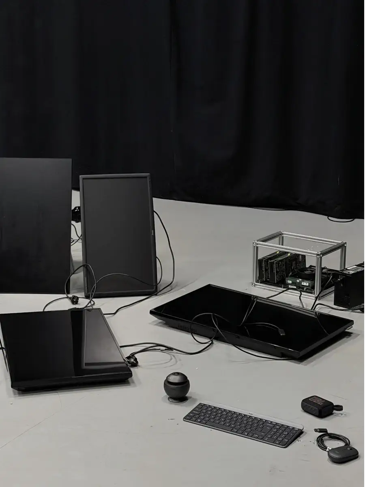
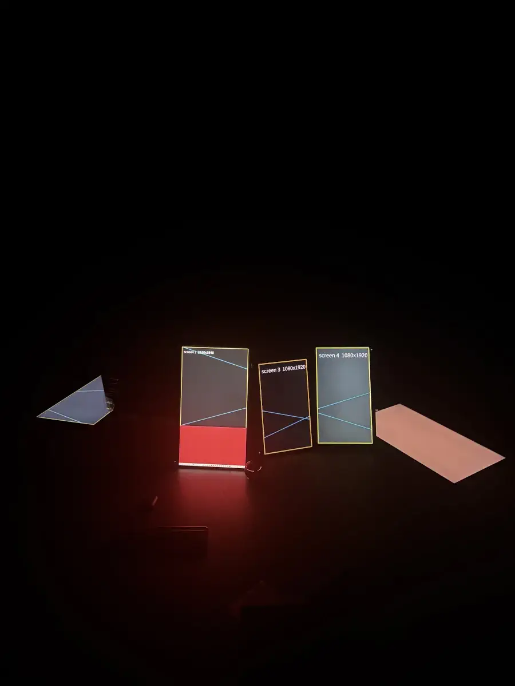

20.10.2026
During his residency at iii in The Hague, Romanian artist David Lazar worked on the production of inference_commons, a digital installation exploring the relationship between computing infrastructures, shared resources and democratic governance.
Drawing inspiration from the ancestral tradition of gathering around a fire to share stories, exchange knowledge and make decisions collectively, Lazar imagines an alternative way of relating to the digital infrastructures that shape our lives.
The installation translates this idea into a physical arrangement of screens: a digital circle fueled by its computing power, evoking a communal gathering place. Rather than presenting computing as a distant and invisible infrastructure controlled by others, inference_commons invites audiences to consider how digital resources might become more tangible, locally managed and collectively cared for.
Through this speculative approach, the work raises questions about who controls the technologies we depend on, how their resources are governed, and how digital infrastructures could be reimagined to serve the common good.
inference_commons was presented at Maintenant Festival in Rennes, France, from 2 to 11 October 2026, marking the first public presentation of the three artworks developed through the SOLAR FUTURES residency programme.

